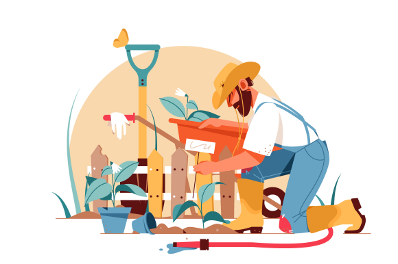

Farmsby offers you the opportunity to grow your finances by investing in one of the most important and lucrative sectors of the economy, Agriculture.
We have the vision to build capacity in small farmers by helping them expand and adopt mechanized farming for increased production. Our crops are fully insured to minimise the risk of losses. At Farmsby, our guarantee is as strong as the land we farm on.
